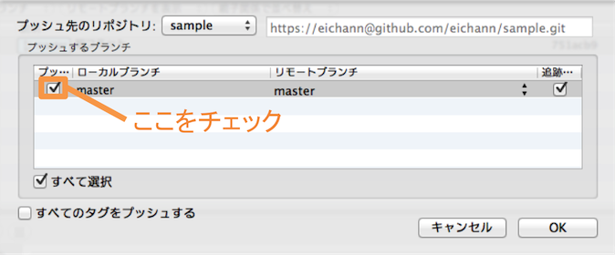

Gitを利用してファイル共有したり、大人数での開発ができるようになるために、Gitの基本的な使い方を学びましょう。
バージョン管理システムGitの基本について学びましょう。
何かコードを書いたり、文章を編集している時に、ファイルを編集前の状態に戻したいことがあると思います。
しかし、折を見てファイルをコピーし保存しておくのも、保存したコピーに名前をつけて保管するのも面倒です。
また、dropboxなどを使いチームでファイルを共有している場合、二人で同じファイルを編集していて、先に編集した人の内容が後の人の上書き保存により消えてしまうということもあり得ます。(下図参照)
Gitを使えば上の2点のような問題を解決できます。
Gitは、「これまでのファイルの状態を保存する」という作業をディレクトリ(フォルダ)単位で簡単に行うことができるツールです。あるディレクトリの中身の状況を全て、任意のタイミングで保存でき、またいつでもその状態に戻すことが可能です。
また、複数人で共有するファイルを編集する場合は上書きする際に警告がでるので、知らないうちに他人の編集内容を上書きするという失敗は起こりません。
では、この便利ツールGitをインストールしましょう。
まずは、GitをインストールするためのツールであるHomebrewがインストールされているか確認しましょう。
1 |
$ brew -v
|
バージョン情報が出た場合は、Homebrewはインストールされています。
もし上のコマンドを打っても以下のようになる場合は、学習を中断しメンターにご連絡ください。
1 |
$ command not found
|
homebrewがインストールされている場合は、以下のコマンドを実行してください。
1 |
$ brew install git
|
特に問題なくGitがインストールされたと思います。
試しにターミナルから以下のコマンドを入力してみてください。
1 2 |
$ git --version
# Gitのバージョンを確認
|
続いて以下のようにgitのバージョンが表示されれば、Gitは問題なくインストールされています。(バージョンは全く同じである必要はありません)
1 |
$ git version 1.8.5.2 (Apple Git-48)
|
もしもエラーが出た場合は、学習を中断しメンターに報告してください。
Githubとは、Gitを利用してディレクトリの変更履歴を共有できるサービスです。
Githubのアカウントを取得すると、複数人でのファイルの変更履歴の共有ができるようになります。先にGithubの会員登録をしておきましょう。
会員登録の際にはメールによる認証が必要となります。こちらを必ず行ってください。
Gitは本来ターミナルでコマンドを打ち込んで使います。
SourceTreeはそれをグラフィカルで簡単に使えるようにしてくれるアプリケーションです。
今回はコマンドではなくSourceTreeを使うので、SourceTreeをインストールしましょう。
①以下のリンクより、SourceTreeをダウンロードしてください。
ダウンロードすると以下のような画面が出ますが、特に何もせずに大丈夫です。
②ダウンロードしたディレクトリをダブルクリックし、表示されたアイコンをドラッグしてアプリケーションディレクトリに入れてください。
③アプリケーションディレクトリから、SourceTreeを起動してください。
以下のような画面が表示されるので、利用規約の方にチェックを入れましょう。下はチェックしなくても構いません。

終わったら「続ける」を押してください。
④Githubのアカウントを登録してください。
続いて以下のような画面が表示されるので、先ほど登録したGithubのアカウントを入力しましょう。
以上でSourceTreeのインストールは完了です。
次は、実際にGitを使ってファイルのバージョン履歴を記録していきましょう。
まずは、バージョン履歴を残したいディレクトリにバージョン履歴を保存する入れ物を作ります。
リポジトリは、バージョン履歴を保管しておく場所です。
バージョン履歴を管理したいディレクトリにリポジトリを持たせることで、バージョン履歴を貯めていくことができます。
ローカル環境とは、端的に言えば皆さん自身のパソコンのことです。
ネットワークに接続されていない状態においての個人のパソコン、という意味でも使われることがあります。
ローカル環境にあるディレクトリのリポジトリのことです。
バージョンを管理するためには、管理したいディレクトリにリポジトリを作成する必要があります。
今回は試しに、こちらで用意したディレクトリにリポジトリを作成しましょう。
今解凍したsampleディレクトリを、Desktopに移動しましょう。
終わったら、下のコマンドで、Desktopの中にsampleがあるか確認してください。
1 2 3 4 |
$ cd ~/Desktop/sample
# sampleディレクトリに移動
$ pwd
# 現在のディレクトリが「/~/Desktop/sample」であることを確認
|
続いて、sampleディレクトリのコミットを保存するリポジトリを作成します。
①SourceTreeを起動し、上部バーにある「新規リポジトリ」をクリックするとメニューが表示されるので「ローカルリポジトリを作成」をクリックしてください。
②/Desktop/sampleを選択し、「作成」をクリックしてください。
これでsampleディレクトリのローカルリポジトリを作成することができました。
以下のsampleと表示されている部分をダブルクリックしてください。
以下のような画面になっていれば成功です。
今はまだリポジトリの中は空ですね。
続いて、現在のディレクトリの状況をバージョン履歴として保存してみましょう。
これまでバージョン履歴と呼んできたものがコミットです。
開発をゲームに例えるなら、コミットはセーブポイントです。
任意の段階で現在のディレクトリの状況をコミットし(保存し)、あとでそのコミットまでディレクトリの中身を元通りにすることができます。
また、コミットは何個でも持つことができます。
Gitでは、コミットを記録するディレクトリのことをワークツリーと呼びます。
ワークツリーに変更があった場合、つまりディレクトリ内のファイルを書き換え保存した場合、
以下の図に示した作業コピーという部分に数字が表示されます。これは、最後のコミット以降に書き換え保存されたファイルの数です。
現在はまだコミットが無いため、作業コピー欄の数字はディレクトリ内のファイルの数になっています。
ワークツリーでの変更はいきなりコミットとしてリポジトリに保存されるわけではありません。
まずは手動で、変更したファイルを選択し、それをインデックスと呼ばれる場所に一度登録した後、
「コミット」ボタンを押すことでコミットを確定します。
インデックスを間に挟むことで、ワークツリー内の必要無い変更を含めずにコミットを行ったり、ファイルの一部の変更だけをインデックスに登録してコミットすることができたりなど、より柔軟にコミットを行うことができます。
Aの部分には、変更を加えたワークツリーのファイルが表示されます。右側では、どこをどのように変更したのかがわかります。
Bの部分には、作業ツリーからインデックスに移したファイルが表示されます。
Aの部分にある変更記録をドラッグ＆ドロップしてBの部分に移すことで、インデックスに移せます。
逆に、Bの部分にあるインデックスに移したものをAの部分にドラッグ＆ドロップすると、その変更をインデックスから外すことができます。
それでは、最初のコミットをしてみましょう。
①左のメニューバーにある「作業コピー」をクリックしてください。
②「作業ツリーのファイル」にチェックを入れ、インデックスに入れてください。
ファイルの変更を一括してインデックスに登録することができます。
③コミットメッセージ欄に「初コミット」と書き、「コミット」ボタンを押してください。
コミットには必ずコミットメッセージが必要です。
コミットメッセージには通常、どのような変更を行ったかをわかりやすく書きます。
これで、現在のディレクトリの状況がコミットされました。
同時に、左メニューの「ブランチ」という項目に、「master」というものが出現したことを確認してください。
ブランチに関しては、後ほど詳しく説明します。
ここからは、具体的に多人数でファイルの共有を行う際の流れをなぞってみます。
文書の共有、編集からアプリケーション開発まで、同様の方法で行うことができます。
複数人でファイルを共有する際、他の作業者とリポジトリを共有するためにはリモートリポジトリを使います。
リモートとはローカルの反対で、インターネットを通じて操作するものを指します。
リモートリポジトリとは、Githubなどを利用してインターネット上においておくリポジトリのことです。
リモートリポジトリから複製したリポジトリを複数人の作業者のPCにおき、リモートリポジトリとローカルのリポジトリの同期を通じて、それぞれに保管されているお互いのコミットを同期していくことで、作業を進めていきます。(下図参照)
ここではまず、リモートリポジトリを作りましょう。
①SourceTreeの右上にある「設定」ボタンをクリックしてください。
以下の画像とは表示が違う方は先に進んでください。
「設定」のアイコンがない人は以下の画像のように「>>」ボタンをクリックするとでてきます。これはウィンドウの幅によって表示が上の画像または下の画像のように変わります。
②リモートを選択し、「追加」ボタンをクリックしてください。
③地球マークを押してください。
④「新規リポジトリを作成」ボタンをクリックしてください。
⑤リモートリポジトリの名前を「sample」と入力してください。
なお、リモートリポジトリを非公開にする場合、料金が発生します。今回は「公開する」にチェックを入れておきましょう。
⑥作成されたリポジトリを選択して、OKボタンをクリックしてください。
⑦SourceTree上で表示する名前を「sample」と入力し、OKボタンをクリックしてください。
これでリモートリポジトリを作ることができました。確認してみましょう。
⑦SourceTree上で、キーボードでcommand + nを打ってください。
以下のような画面になったら、上部メニューの「リモート」を選択してみましょう。
先ほど作成した「sample」という名前が表示されていれば、リモートリポジトリが作成されています。
リモートリポジトリを作ることができたら、次にローカルリポジトリとリモートリポジトリを同期してみましょう。
自分のローカルリポジトリをリモートリポジトリと同期し、自分のコミットを反映させることをプッシュと言います。
プッシュでは自分が行った変更をリモートリポジトリに同期させます。しかし、複数人で開発している場合は自分以外の作業者が変更をプッシュする場合があります。すると自分のローカルリポジトリの状態とリモートリポジトリの状態が変わってしまいます。このとき、リモートリポジトリの変更をローカルリポジトリに同期させることをプルといいます。
下図は、プルとプッシュを含めたGitによるバージョン管理の全体図です。
①リポジトリを更新するため、~/Desktop/sample/site/test.htmlを開き、以下のように変更し保存してください。
1 2 3 4 5 6 7 8 9 10 11 12 13 |
<!DOCTYPE html>
<html>
<head>
<title>test</title>
<meta charset="UTF-8">
<link rel="stylesheet" type="text/css" href="style.css">
<meta http-equiv="Content-Type" content="text/html; charset=UTF-8">
<meta name="viewport" content="width=device-width, initial-scale=1.0">
</head>
<body>
こんにちわ、世界
</body>
</html>
|
②SourceTreeを開きます。左メニューにある「作業コピー」の横の数が1になっていることを確認し、クリックしてください。
③変更をコミットしてください。
コミットメッセージは「文字変更」にしてください。
④上部メニューバーのプッシュボタンを押してください。
⑤開いた画面にあるmasterにチェックを入れ、OKボタンをクリックしてください。

⑥githubのアカウントページにアクセスしてください。
リモートリポジトリに反映されたか確認します。
以下の画像を参考に、githubのトップページから、アカウントページにアクセスしましょう。
■
⑦リモートリポジトリにアクセスしてください。
アカウントページの中央辺りに、以下のような部分があります。「sample」をクリックすると、リモートリポジトリの状態が確認できます。
⑧コミット一覧ページにアクセスしてください。
以下の画像を参考にコミット一覧にアクセスしてください。
以下のように、先ほどのローカルリポジトリでのコミットが、リモートリポジトリに反映されていることがわかります。
ブランチとはGitのバージョン管理の仕組みで、現在のコミットから分岐した作業履歴を残すことができるというものです。
はじめは「master」ブランチのみがリポジトリに存在していますが、ここからあたかも別の歴史に分岐するように、ブランチを増やしていくことができます。

リポジトリに最初のコミットを行うと、自動でmasterという名前のブランチが作成されます。
ブランチを利用すると、同じリポジトリの中で複数の変更を同時に進めることができます。
また、一度分岐したブランチは元のブランチと結合して一つのブランチにすることができます。
これを利用して、多人数で作業する際に簡単に役割分担ができます。
例えばとあるアプリケーションの開発において、masterブランチからAさんはフォロー機能を、Bさんはコメント機能を、Cさんはお気に入り機能を作るためにそれぞれのブランチを作ります。
すると、それぞれ別個のブランチで作業するので、互いに影響し合ってエラーが起こるといったことがありません。
Aさんが作業を終了し、元のブランチに作業したブランチを結合すると、元のブランチのアプリケーションにはフォロー機能が追加されます。
同じように残りの2人もブランチを結合すれば、コメントやお気に入り機能もついたアプリケーションになるというわけです。
では、試しにブランチを作成してみましょう。
①SourceTree上部メニューの「ブランチ」ボタンをクリックしてください。
現在のブランチから枝分かれする、新たなブランチを作成できます。
②任意の名前を入力し、「作成」ボタンを押してください。
ブランチの名前は、「作成するブランチで何をするのか」がわかるような名前にします。
今回は、「test」という名前にしてください。
また、このとき「新規ブランチをチェックアウト」のチェックボックスにはチェックをつけておきましょう。
ブランチ作成後、作業中のブランチが新規作成したブランチになります。
これでブランチができました。
左メニューの「ブランチ」という項目のmasterの下に、testというブランチができていることを確認してください。
太字になっている方が、現在操作しているブランチです。
これまで、コミットとブランチついて学んできましたが、ここではこの２つの大きな違いについて解説していきます。
コミットとは、 ある地点に後で戻れるように、セーブポイントを作ること です。
ブランチとは、 １つの機能を実装するときに作成するもの です。
どういうことか詳しく見ていきましょう。
例えば、あるアプリケーションにユーザー機能を実装するとします。
ここで最初に行うことは、ブランチを作成することです。
ある機能の実装を行うときは、その機能ごとにブランチを作成します。
ブランチを作成する大きなメリットは、複数の機能を同時並行で実装することができます。
ブランチはブランチ毎に独立していて、実装している段階ではお互いに干渉し合いません。
ですので、機能ごとにブランチを作成することにより、複数の機能を同時並行で実装していくことができるのです。
小さなアプリケーションを開発する場合や、お一人での開発の場合はメリットが少ないのですが、
FacebookやTwitterのような大きなアプリケーションの場合や、複数人での開発の場合はメリットが大きくなります。
また、ブランチを作成するときに気をつけなければならないのがブランチ名です。
ブランチ名を適当につけてしまうと、どのブランチで何の機能を実装しているのか分からなくなってしまいます。
ですので、ブランチ名は何の作業をしているのかを判別できる名前にしましょう。
ブランチを作成し、ブランチ名を決めたら実際にユーザー機能を実装していきます。
このとき、以前学習したdeviseというgemを使うことにしましょう。
Gemfileにgem 'devise'を記述してターミナルでbundle installを実行し、rails g devise:installを実行しdeviseをアプリケーション内で使えるようにします。
bundle installの実行が終わったら、次に行うことはコミットです。
コミットとは後で戻れるように、セーブポイントを作ることでした。
ここでコミットをしておくと、そのユーザー機能の開発の段階で不具合が起きたときに、ソースコードをこの段階まで戻すことができます。
また、コミットをする際に気をつけなければならないのがコミット名です。
コミット名が適当ですと、あるコミット地点まで戻るときに、どのコミットで何をしたのかわからなくなってしまい、どのコミットに戻ればいいのかわかなくなってしまいます。
ですので、コミット名を記述するときは、そのコミットでどのような実装をしたのか分かるようにしましょう。
ここでは、install gem deviseというコミット名でコミットするのが適切でしょう。
次に、rails g devise:viewsを実行し、ビューファイルを作成します。
この作業でもコミットしましょう。
コミット名はinstall devise viewsとするのが適切でしょう。
rails g devise userを実行し、deviseに紐付いたuserモデルを作成します。
rails g devise userで作成されたマイグレーションファイルを実行するために、rake db:migrateコマンドを実行します。
この段階で、コミットを行います。
コミット名はcreate user model and tableとするのが適切でしょう。
このようにしてコミットを行っていきます。
機能ごとにコードを管理するときはブランチを作成し、セーブポイントを作りたいときにコミットを行います。
これがコミットをブランチの違いです。
ブランチを切り替えることをチェックアウトと言います。
操作していないブランチをダブルクリックすると、チェックアウトできます。
この時、テキストエディタで開いているワークツリー内のファイルも、自動的にそのブランチの状態になってくれます。
①SourceTree左メニューの「ブランチ」の中にあるmasterブランチをダブルクリックしてください。
もう一度、testブランチに切り替えておきましょう。
②SourceTree左メニューの「ブランチ」の中にあるtestブランチをダブルクリックしてください。
ブランチを作ったら、そのブランチ上で自分の担当箇所の作業をしていきます。
作業を終えたらコミットし、プッシュすることでリモートリポジトリに自分のブランチを反映します。
①SourceTreeを開き、現在testブランチ上で作業していることを確認します。
②~/Desktop/sample/site/test.htmlを以下のように書き換え、保存してください。
1 2 3 4 5 6 7 8 9 10 11 12 13 14 |
<!DOCTYPE html>
<html>
<head>
<title>test</title>
<meta charset="UTF-8">
<link rel="stylesheet" type="text/css" href="style.css">
<meta http-equiv="Content-Type" content="text/html; charset=UTF-8">
<meta name="viewport" content="width=device-width, initial-scale=1.0">
</head>
<body>
こんにちわ、世界
よろしくね！
</body>
</html>
|
③変更をコミットしてください。
④ローカルリポジトリをプッシュしてください。
この時、新たに作ったブランチにチェックを入れ「OK」を押します。
testブランチでの作業は終了しているので、リモートリポジトリ上でmasterブランチと統合しましょう。
その名の通り、ブランチとブランチを結合することを指します。
あるブランチは、そのブランチが分岐したブランチに統合される場合がほとんどです。
例えばmasterブランチにtestブランチをマージするとき、両方のブランチでのコミットを含んだマージコミットが作成されます。(下図参照)
そのコミットがmasterブランチの最新のコミットとされます。
プルリクエストとは、リモートリポジトリにてマージする際に挟む確認作業です。プルリクエストを出すと、Github上でブランチ間にどれだけの差分があるかを確認できます。確認が終了したら、改めてマージを実行します。
プルを実行すると、リモートリポジトリにあるブランチの内容が自動的にローカルリポジトリの同じブランチにマージされてしまいます。しかし、単にリモートリポジトリの内容を確認したいだけで、マージはしたくない場合もあります。そのような時は「フェッチ」を使用します。
上部メニューの「フェッチ」ボタンを押すと、フェッチを実行できます。
フェッチを実行し、もしもリモートのブランチとローカルのブランチに差分があった場合、ブランチ名の横に下向きの矢印が現れます。
もしその差分を同期したければ、改めて「プル」ボタンを押しましょう。
では実際にプルリクエスト→マージの流れを体験してみましょう。
①Githubにアクセスします。
②リモートリポジトリにアクセスします。
先ほどの、testブランチのプッシュが正常にできていると画像のようになっているはずです。
③右側にある「Compare & pull request」ボタンをクリックしてください。
④プルリクエストを書きましょう。
真ん中にある大きな欄に、どのような変更を行ったのか端的に記述しましょう。
書き終わったら、右下にある緑色の「Create pull request」ボタンを押しましょう。
⑤プルリクエスト画面から、「Merge pull request」ボタンを押してください。
以下のようなプルリクエスト画面に遷移してきたと思います。
ここでは、このマージによってどのような変更が行われるかを作業者全員が確認することができます。
左下の「Merge pull request」ボタンを押しましょう。
すると、緑色で「Confirm merge」というボタンが表示されるので、こちらのボタンも押しましょう。
これで、masterブランチにtestブランチをマージできました。
⑥マージ済みのブランチを消すよう促されるので、「delete branch」ボタンを押します。
マージしたブランチは基本的に必要無くなるので、消してしまいます。
⑦SourceTreeを確認してください。
最後にSourceTreeを確認し、以下の画像のようにブランチmasterの横に下方向の矢印と数字が表示されていれば成功です。
testブランチにおける変更がリモートのmasterブランチに適用されたので、リモートのmasterブランチとローカルのmasterブランチの間で差異が生まれました。矢印と数字は、それを教えてくれています。数字の数は、変更されたファイルの数です。
もしも表示されていなければ、上部メニューより「フェッチ」ボタンを押してみてください。
リモートリポジトリとの差異が検出され、矢印と数字が表示されるはずです。
⑧リモートリポジトリをプルしてください。
放置しておく意味も特にないので、安全だと確認できている場合はプルを実行しましょう。
まずはmasterブランチに移動してください。ブランチの名前をダブルクリックすると移動できます。
つづいて上部メニューの「プル」をクリックします。すると、以下のような画面になります。
「プルするリモートのブランチ」の欄がmasterであることを確認し、OKボタンを押しましょう。
これで、リモートリポジトリにおけるmasterへの変更(マージ)がローカルリポジトリに反映されました。
⑨testブランチを消去しましょう。
作業が終わったブランチは必要ないので、ローカルリポジトリからも消去しましょう。
ブランチを右クリック→「ブランチを削除」でブランチを削除できます。
ここまでGitを利用した複数人での作業の流れを順に追ってきましたが、まとめると以下のようになります。
①リモートリポジトリと、各人のローカルリポジトリを用意
②masterブランチから、各人がそれぞれの担当箇所作業用のブランチを切る
③担当箇所の作業が完了、リモートリポジトリに担当箇所のブランチをプッシュ
④リモートリポジトリで、担当箇所のブランチをmasterブランチに結合(マージ)
⑤各々のローカルリポジトリとリモートリポジトリを同期
②~⑤を繰り返して作業を進めていきます。
ここまでの説明をより深く理解するためには以下のサイトが非常に参考になるので、是非読んでみてください。
お疲れ様でした！このカリキュラムの終わりに確認問題を解きましょう。
 大宅 誠人
大宅 誠人